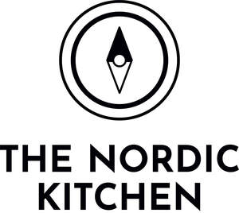

Trade Mark Journal No.2025/048 28 November 2025
UK00004289263 4 November 2025 (29,30,35,43)

- Class 29
- Pickles made from vegetables; jellies, preserves, jams and compotes; preserved, pickled, canned, dried, frozen and cooked fruits and vegetables; meat products; preserved meats and meat preparations; charcuterie and pate; soups; cheese; dairy products; yogurt; edible oils and fats; plant based dairy substitutes and milk alternatives (including almond, oat and soy milk); tofu and tempeh; antipasti; olives; tapenades; prepared vegetable-based dips and spreads; hummus; guacamole; eggs; fish and fish products; poultry and poultry products; nuts; dried fruit, and seed; vegetable and fruit salads; vegan and vegetarian foods; ready prepared meals and snack foods; hampers containing the aforesaid goods.
- Class 30
- Coffee beverages made from caffeinated and decaffeinated roasted coffee beans; iced coffee drinks; hot or cold coffee beverages made with milk or almond, oat or soy milk; chocolate coffee; roasted coffee beans; caffeine-free coffee beans; flavoured coffee; coffee bags; coffee flavourings; ground coffee; coffee extracts; drip bag and filter coffee; ground coffee beans; coffee substitutes; hot or iced chocolate beverages; Cocoa; Tea served as hot or iced beverage; Tea packaged as loose tea leaves or in bags; black tea; herbal tea; ginger tea; rooibos tea; chai tea; chamomile tea; Darjeeling tea; peppermint tea; ginseng tea; jasmine tea; green tea; tea for infusions; matcha tea; Bread; rolls; pastries; cakes; buns; muffins; cookies; biscuits; scones; croissants; doughnuts; brownies; tarts; pies; éclairs; macarons; puddings; desserts (confectionery); confectionery; chocolate and chocolate products; ice cream, gelato and sorbets; frozen yoghurt (confectionery ices); syrups and sauces (condiments) for beverages and desserts; preserved herbs; sauces (condiments); seasonings and spices; sugar; honey; treacle. Sandwiches; panini; bagels; wraps; filled rolls; pizzas; quiches; savoury pies; prepared meals consisting primarily of rice, pasta or noodles; Breakfast cereal; muesli, granola, nut, fruit and seed mixtures; hampers containing the aforesaid goods.
- Class 35
- Franchising services, providing commercial assistance and mark rights in the establishment and/or operation of cafes, restaurants and coffee houses; business management assistance in the establishment and operation of franchises; business advisory services relating to the operation of cafés and coffee shops; retail services, mail order retail services, electronic retail services, online retail services, all connected with foods, wines, beverages, clothing, headgear, utensils for kitchens, mugs, cups, glassware, porcelain ware, earthenware, chinaware, table linen, place mats, tea towels, cutlery, utensils and containers for cooking or kitchen use, cake tins, napkins, trays, picnic baskets, hampers, filled hampers containing food and beverages, printed publications and printed matter, greeting cards, gift wrap and ribbons, instructional materials, photographs, artwork, and toys; Providing ordering services, menus and product lists; provision of web space for advertising and promoting goods and services; compilation of advertisements for use as web pages on the Internet.
- Class 43
- Provision of hot and cold food and drink; cafeteria, canteen and cafe services; coffee shop services; bistro services; delicatessen services; take away services; fast-food restaurant services; catering services including mobile catering services; catering services provided online from a database and through the Internet; restaurant services; self-service restaurant services; banqueting services; reservation services for booking meals and restaurant reservations; advisory and information services relating to the selection, preparation and serving of food and beverages; providing information and exchange of information in relation to foods, alcoholic beverages and non-alcoholic beverages including through the Internet.
Swallows Nursery & Plant Centre Limited
Representative: Lewis Silkin LLP